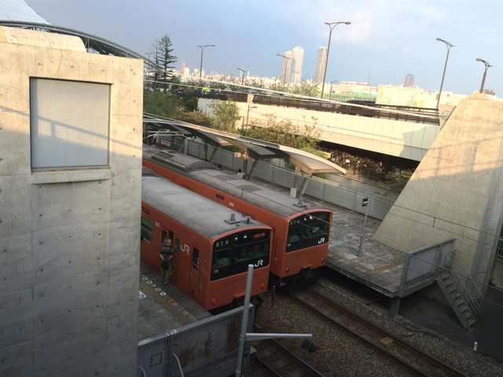
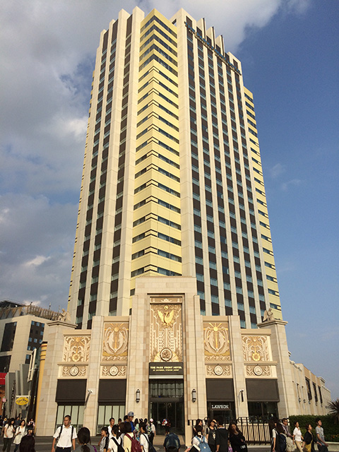
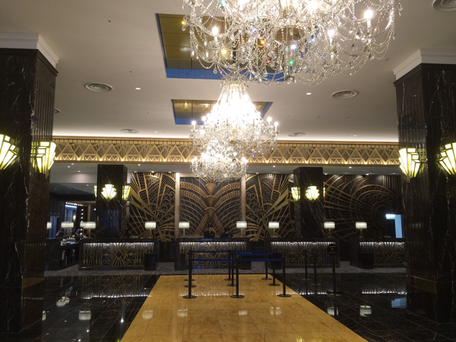
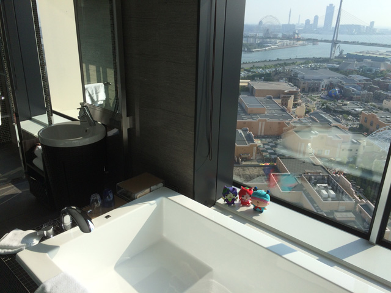
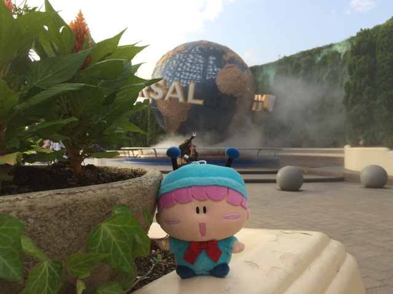
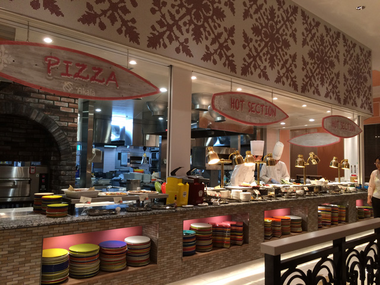
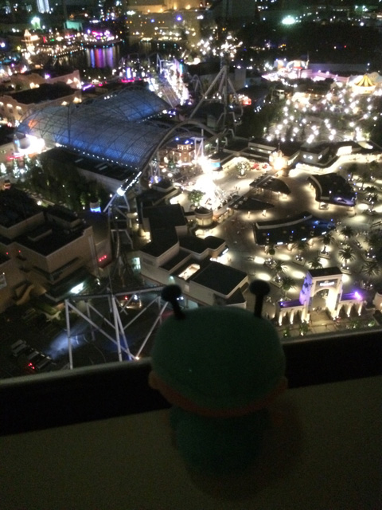

２０１５年９月４日（金）～８日（火）の５日間、家族＆ムルモを連れてゆっくりと大阪を旅行してきました。
今回の大阪旅行の最大目的はUSJで、期間限定の『妖怪ウォッチ ザ・リアル』を楽しむこと！（ミルモとは他作品で申し訳ございません）
USJへ行くのは私は今回が初めてで、当初は７月の終わりに行く予定にしていました。が、一部で報道されていたように『妖怪ウォッチ ザ・リアル』の整理券があまりの人気で開園からわずか数分で配布終了となることを聞いて大慌て。。急きょ作戦を練り直し、万全の態勢を整えて９月初旬に狙いを定めました。
どのようにしたら整理券を確実にゲットできるか、ネットで調べまくりました。その結果、立て直した計画はすべてうまくいき、何のトラブルもなくUSJや大阪をたっぷり堪能できました(^^)。やはり備えあれば憂いなし、ですね。ということで、ムルモの旅特別版として、USJでの体験を写真とともにレポートいたします。

東京駅にてお昼の新幹線に乗車し、１４時半に新大阪駅に到着。
大阪環状線と桜島線（ゆめ咲線）に乗って、USJの最寄り駅・ユニバーサルシティ駅へ向かいました。
写真はユニバーサルシティ駅に停まるJRゆめ咲線の電車です。
数年前まで関東でも走っていたこのオレンジの電車が懐かしい…。
ところで、地元の人は、桜島線とゆめ咲線、どちらの名前で呼んでいるのだろう？

今回宿泊したホテル「ザ パーク フロント ホテル アットUSJ」です。
８月１日にオープン仕立てのすごく新しいホテルで、他のホテルよりもUSJに近い（ホテル目の前はUSJの門）ホテルでもあります！
それにしてもなかなか覚えられないホテルだと思っているのは私だけではないはず！？

「ザ パーク フロント ホテル アットUSJ」のフロントです。
つやつやの床とか豪華なシャンデリアとか、豪華すぎて目がくらみまくりでした。
まさに松竹くんになった気分です。「平井～～っ」

２８階建てのホテルなのですが、宿泊したのは２７階のお部屋。
しかも２６階より上はラグジュアリールームになっていて、広すぎるバスルームからUSJを広く見渡せるという特別仕様に超びっくり！
この光景に興奮しまくって、ムルモさんとお伴（ブドウニャン・イチゴニャン）と思わず記念撮影しちゃいました。

夕食の時間までまだ時間があったので、ぶらぶらとお散歩♪
USJの入口で、これぞUSJと言えるオブジェをバックに記念撮影です～。

USJの入口付近にもたくさんのレストランがあるのですが、新しいホテルを満喫したかったので、夕食はホテルのバイキングへ・・。
大きなホテルのバイキングだと、品ぞろえの豊富さが素晴らしすぎで、油断すると食べ過ぎてしまいます＞＜

先ほどのバスルームから見えるUSJの夜景です。
USJを疾走する『ハリウッド・ドリーム・ザ・ライド』がきらきら光っていてとてもきれいでした。
あまりの満足感に明日の目的を忘れてしまいそう・・・。
翌日は朝が早いので、まだUSJで音楽が鳴り響いているうちに早めに睡眠をとります。
本題となる２日目のレポートは後日掲載いたします！ もう少々お待ちくださいませ～。
(2015/9/12)